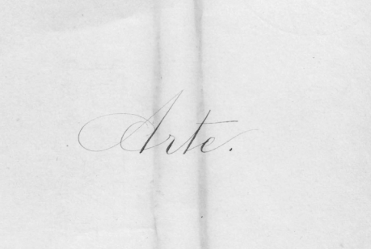

Academia Colombiana de la Lengua. El 10 de mayo de 1871 se creó la Academia Colombiana, la primera fundada en el Nuevo Mundo, el primer director fue José María Vergara y Vergara y el secretario, José Manuel Marroquín. Se fijó el número de doce para constituir los miembros fundadores. R. J. Cuervo formó parte de este selecto listado inaugural. Para conmemorar el centenario del fallecimiento de Cuervo, se programó un ciclo de conferencias denominado “El universo de R. J. Cuervo”.
Académico. Cuando se constituyó la Academia Colombiana en 1871, Cuervo estaba próximo a cumplir 27 años, pero era ya reconocida su fama de gran filólogo, pues contaba en su haber con la Gramática latina, obra escrita con M. A. Caro, con la Muestra de un diccionario, proyecto elaborado con Venancio González Manrique y una serie de breves artículos que había publicado en los periódicos de la época, pero sobre todo, corregía ya las pruebas de imprenta de sus famosas Apuntaciones críticas sobre el lenguaje bogotano, e ideaba su monumental Diccionario de construcción y régimen de la lengua castellana (en adelante dcr) que iniciaría formalmente el 29 de junio de 1872. Con algo de ironía le decía a M. A. Caro que sería un “académico silencioso y dormilón”.
Ahumada, Ignacio. En 1981, el Instituto Caro y Cuervo se sumó al homenaje del bicentenario de Bello, con la reimpresión de las Notas a la Gramática de la lengua castellana de don Andrés Bello, editadas por Ignacio Ahumada, ilustre estudioso y difusor de la teoría lexicográfica. En el estudio preliminar Ahumada señala: “Quizá no exagere demasiado al conceder a Rufino José Cuervo el título de «padre adoptivo» de la Gramática de Bello, pues en la larga historia de esta obra no se encuentra autor que con más admiración, cariño y respeto la haya tratado. Incluso me atrevería a decir que parte del prestigio que hoy tiene se debe a la ingente labor del filólogo colombiano”[1].
Aislamiento. Se puede afirmar sin temor a equivocarse, que R. J. Cuervo buscó el aislamiento. Foulché-Delbosc afirma que era un ermitaño, y esta aseveración está confirmada en sus cartas. Dice que él llevaba en París una vida casi eremítica[2], la ciudad para él es una Tebaida[3], viven en esa Babilonia como en el desierto[4]. Son pocos los compatriotas que los visitan; creía que sus paisanos no lo querían y aun le negaban el sentido común[5]. Pero no obstante esa voluntad de vivir alejado del mundo, no lo logra. Se puede afirmar que no había hispanista que no lo buscara, que no quisiera cambiar ideas con él, someterle sus puntos de vista. El padre Félix Restrepo señala: “Veintinueve años continuos pasó Cuervo en París, en la ciudad de las grandes diversiones, una vida de benedictino, una vida concentrada en la investigación de los secretos del lenguaje, y alejada por completo de los atractivos de la bulliciosa ciudad”[6].
Anuario de la Academia colombiana. En 1874 la Academia acordó publicar el Anuario. La comisión encargada del proyecto estaba constituida por R. Pombo, secretario; M. A. Caro, censor y R. J. Cuervo, tesorero. En el primer tomo aparecieron tres trabajos de Cuervo: “Estudios filológicos” págs. 51-71; “Una nueva traducción de Virgilio” págs. 173-190;“Observaciones sobre el Diccionario de la Real Academia Española (undécima edición, año de 1869)” págs. 211-223.
Año Rufino José Cuervo. El Ministerio de Cultura en el marco del Programa de Memoria Literaria Nacional (que en 2008 celebró el año Carrasquilla; en 2009 el año Obeso-Artel; y en 2010 el año Caballero Calderón), emitió la resolución 0096 (…). Así mismo el Ministerio de Cultura realizó varias actividades y proyectos para conmemorarlo entre los que están el juego de mesa Cuervolario, el programa radial Palabra de Cuervo, los encuentros 3000 voces, Coloquios por Rufino y la divulgación de contenidos en la web 2.0 a través de Twitter en @YoRufino y en la página de facebook Rufino Jota Cuervo.
Apuntaciones críticas sobre el lenguaje bogotano. Este es el libro consentido de Cuervo, hizo seis ediciones de la obra, la primera salió en 1872, la última en 1914, tres años después de su muerte. Uno de los objetivos de las Apuntaciones es la unidad de los pueblos hispánicos: “Nadie hace tanto por el hermanamiento de las naciones hispano-americanas, como los fomentadores de aquellos estudios que tienden a conservar la pureza de su idioma, destruyendo las barreras que las diferencias dialécticas oponen al comercio de las ideas”[7]. Ortega Torres dice de las Apuntaciones: “La ciencia filológica de esta obra es tanta, tanta la doctrina, que ninguno de los preceptistas de gramática o correctores del lenguaje han prescindido de ese libro, considerado por todos ellos como modelo insuperable y guía certera. Cuervo mismo quiso hacerlo de gratísima lectura, «empleando en él todos los tonos, ya criticando con gravedad, ya jugueteando con festivas vayas, ya copiando lugares de los clásicos, ya con disquisiciones y conjeturas filológicas, ya patentizando los errores en que incurrimos con ejemplos de propia cosecha, o sacados de obras de compatriotas nuestros». Tal lo advierte en el prólogo”[8]. Según J. J. Montes las Apuntaciones se convirtieron en todo un tratado de dialectología, y con esta obra nace esta disciplina de una manera científica en Hispanoamérica. Aunque no se puede negar que es una obra normativa propia de su época (y por qué no, de la actual), no se limita a la corrección idiomática sino a la descripción de fenómenos lingüísticos y aún más, tal como lo expresa claramente, pretende ser explicativa.
Archivo Epistolar Colombiano. Por la resolución 793 de 1962 se creó la serie bibliográfica: Archivo Epistolar Colombiano, a cargo del departamento de Historia Cultural. El copioso archivo epistolar de Cuervo ha merecido la atención preferencial del Instituto Caro y Cuervo. Las cartas dirigidas a R. J. Cuervo se encuentran en su archivo al cuidado del Instituto Caro y Cuervo. Las cartas de Cuervo, dispersas por el mundo han sido paulatinamente recogidas ya en original, ya en trascripción o por el borrador que él mantuvo. El Instituto Caro y Cuervo ha publicado veintisiete tomos del Archivo Epistolar Colombiano, muchos de ellos bajo el cuidado de Mario Germán Romero, jefe del Departamento de Historia cultural por más de veinte años.
* * *
[1] Ahumada, 1981: xvii.
[2] aec, xiii, 154.
[3] aec, vii, 15.
[4] aec, iii, 202.
[5] aec, vii, 155.
[6] Anuario, xi, 146.
[7] Cuervo, Obras, 1987, ii, 6.
[8] Anuario, xi, 198.